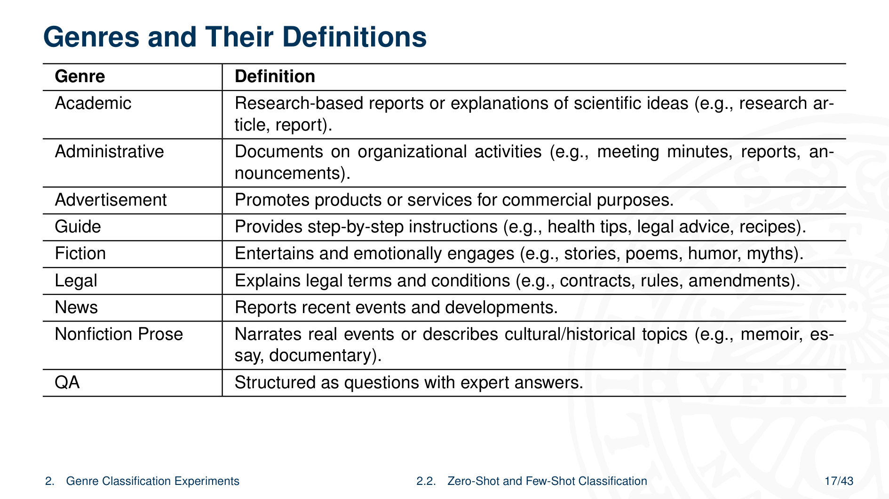
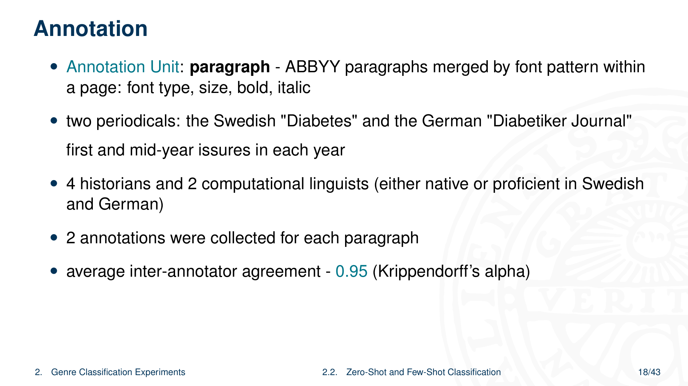
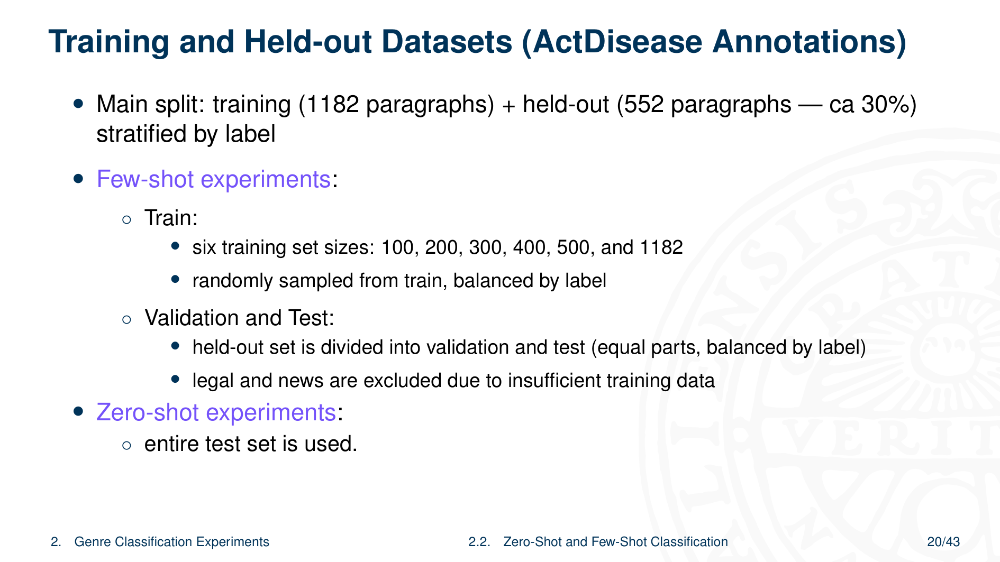
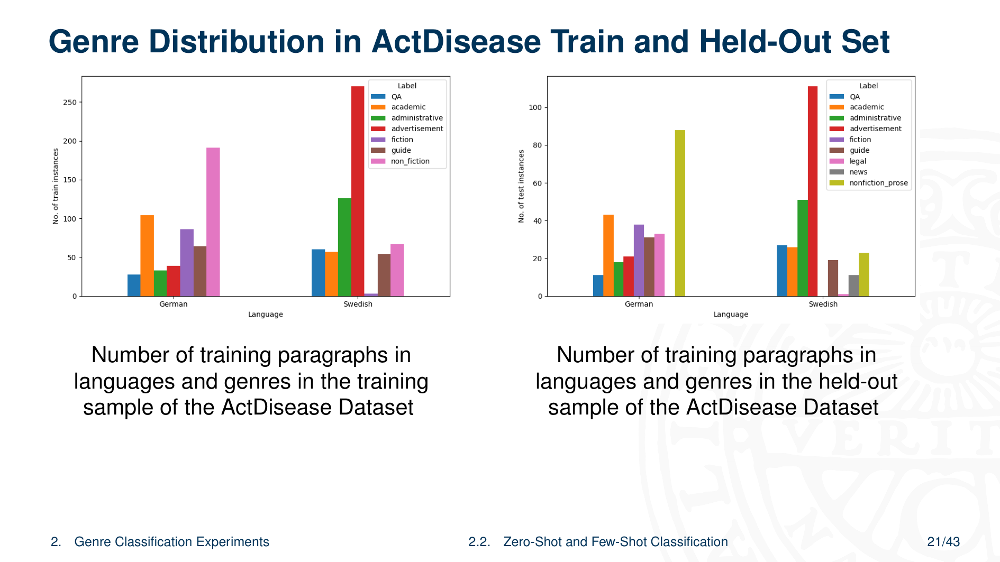
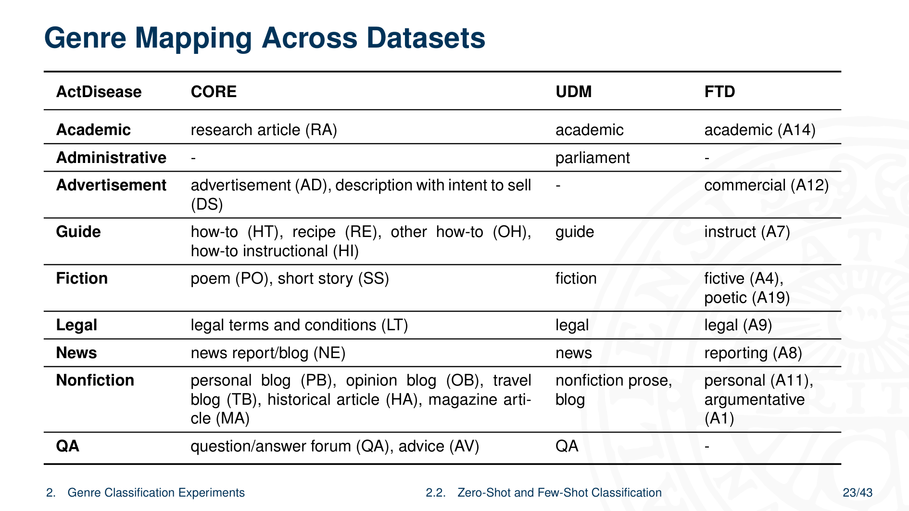
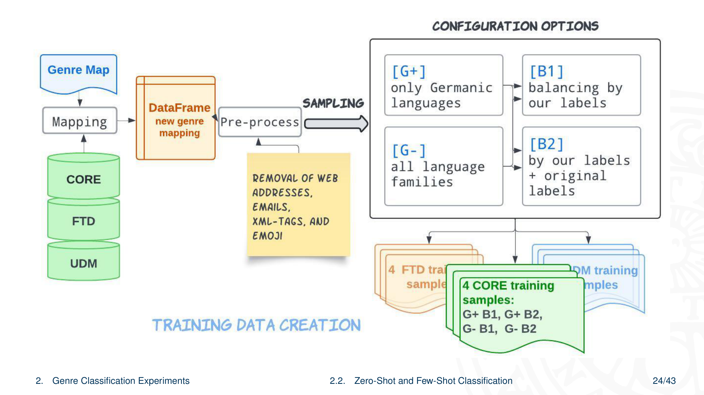
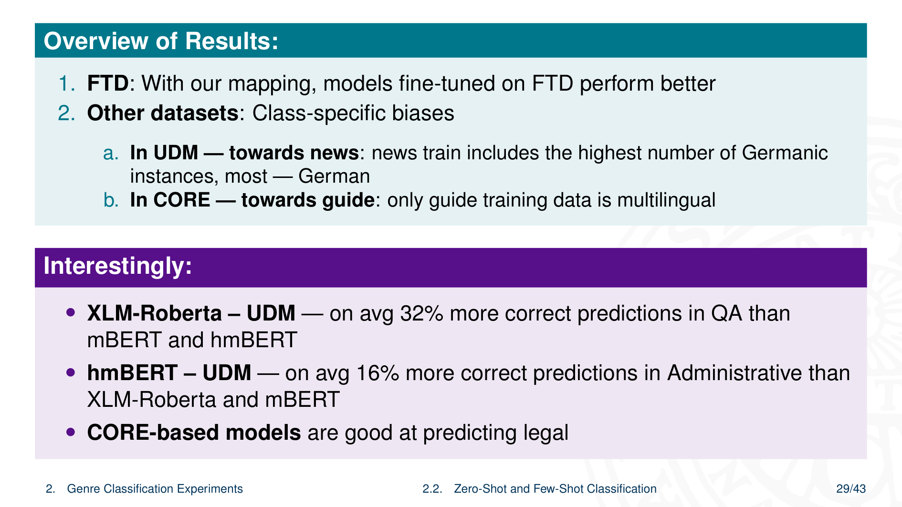
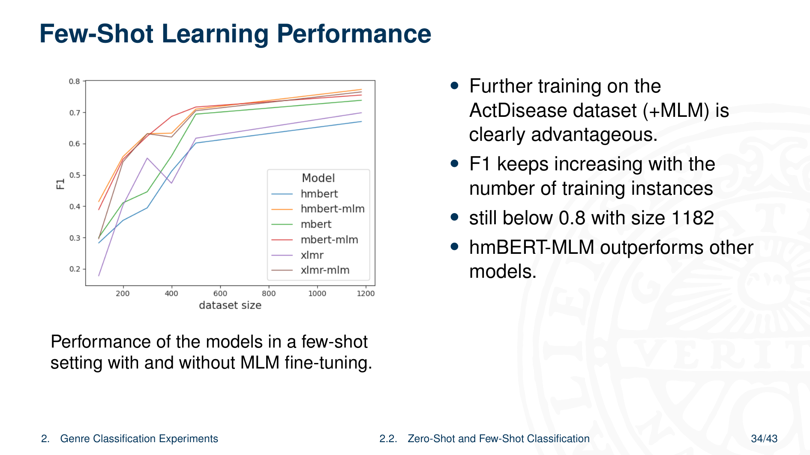
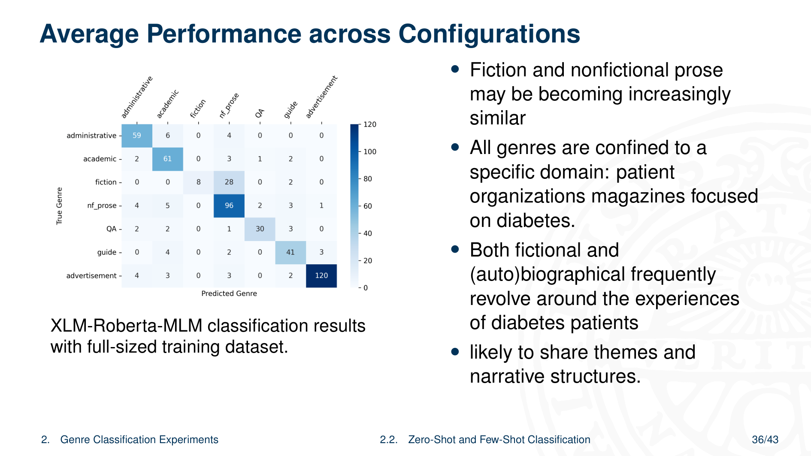
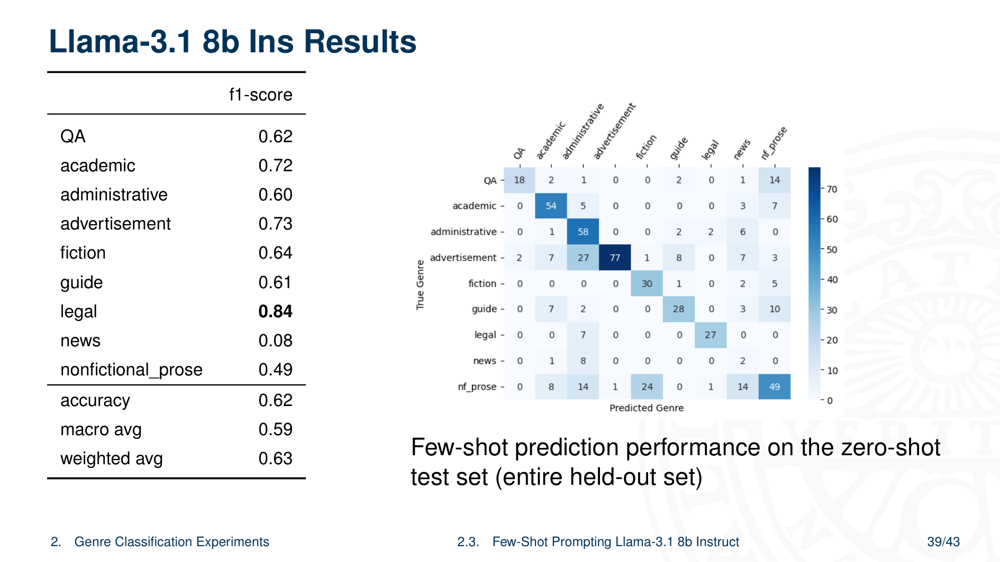

5 Genre Classification for Historical Medical Periodicals
Overview
The authors present a comprehensive study on genre classification within historical patient periodicals, conducted as part of the ERC-funded ActDisease programme. This programme investigates how patient organisations in 20th-century Europe shaped concepts of disease and medical practices, using their magazines as a primary data source. A substantial corpus, the ActDisease Dataset, underpins this work, comprising 96,186 digitised pages from patient magazines across Germany, Sweden, France, and the United Kingdom.
The core technical challenge the team addresses is the classification of diverse and often ambiguous textual genres found within these historical documents. This task is complicated by issues in Optical Character Recognition (OCR) and the limitations of traditional methods such as topic modelling. To overcome this, the authors developed a sophisticated, expert-driven genre-labelling scheme and conducted extensive experiments using both zero-shot and few-shot learning paradigms.
Their study evaluates a range of multilingual encoder models, including XLM-Roberta, mBERT, and a specialised historical mBERT (hmBERT), alongside generative models like Llama-3.1 8b. Key findings demonstrate that few-shot learning, particularly with Masked Language Model (MLM) fine-tuning, significantly improves performance. The hmBERT-MLM model emerges as the most effective, highlighting the value of domain-specific pre-training for historical texts. The work concludes that the rich generic diversity of popular magazines makes them a more complex text mining target than scientific journals, underscoring the necessity of robust genre classification for fine-grained historical analysis.
5.1 Presentation Outline

The research programme unfolds across three principal sections. It begins with an introduction to the ActDisease project, followed by a detailed examination of the genre classification experiments. The presentation culminates in a summary of the key conclusions drawn from the research.
5.2 The ActDisease Project: Aims and Scope

The authors initiated the ‘ActDisease’ project, an ERC-funded research programme designed to explore the influence of patient organisations on medicine and society. The project’s central aim is to analyse how these groups, active throughout 20th-century Europe, shaped concepts of disease, the personal experience of illness, and prevailing medical practices.
To achieve this, the investigators use patient-published periodicals as the primary source material for their historical analysis. An image of Heligoland, Germany, provides visual context for the historical settings under investigation.
5.3 The ActDisease Dataset Composition

The project team meticulously compiled the ActDisease Dataset, a specialised corpus of digitised magazines published by patient organisations. This collection spans materials from Germany, Sweden, France, and the UK, amounting to a total of 96,186 pages. A summary table provides a detailed breakdown of the dataset, specifying the number of unique magazine titles, total page counts, and the range of publication years covered for different diseases within each country.
5.4 Digitisation and Post-OCR Correction

A significant technical hurdle in the project involved the digitisation of historical documents. The process of Optical Character Recognition (OCR) often yields suboptimal results when applied to older, varied source materials. This challenge necessitates further research into effective post-OCR correction methods, which are crucial for enhancing the accuracy and utility of the digitised text for subsequent analysis.
5.5 Challenges in Genre Classification

The analysis of patient periodicals presents a distinct challenge in genre classification. These source materials contain a wide diversity of text types, ranging from medical advice to personal stories and advertisements. Consequently, conventional methods such as topic modelling or basic term-counting prove inadequate for accurately differentiating these nuanced genres, which often share overlapping vocabularies.
5.6 Motivation for Genre Classification

The team’s focus on genre classification stems from its analytical utility. From a language technology standpoint, genre provides a framework for understanding the communicative purpose of a text. By classifying content into distinct genres, the authors can conduct more rigorous historical investigations, separating, for instance, official announcements from personal testimonials. This capability ultimately enables a more fine-grained and context-aware analysis of the entire dataset.
5.7 Illustrating Genre Diversity in ‘ActDisease’

To illustrate the project’s central challenge, the authors present a collage of documents showcasing the diverse textual genres related to a specific disease, likely diabetes. This visual representation effectively communicates the variety of formats and styles—from scientific articles to personal letters and advertisements—that the team must categorise. It underscores the complexity of performing automated analysis on such heterogeneous source material.
5.8 Textual Examples of Genre Variation

Further reinforcing the concept of genre diversity, the presentation offers several concrete textual examples from the ‘ActDisease’ domain, specifically concerning diabetes. These snippets highlight the distinct linguistic and structural features of different genres found within the patient magazines. By presenting these varied examples, the authors clarify the practical difficulties and the importance of developing a robust classification system.
5.9 Defining Genre Labels for Analysis

The authors established a formal set of genre labels to structure their classification task. These labels were not algorithmically derived but were instead defined by subject-matter experts to ensure historical and contextual relevance. The primary function of this schema is to enable the systematic separation of content according to its type, which is essential for nuanced historical analysis. Moreover, the team designed the labels with a view towards general-purpose applicability, aiming for a system that could be adapted for other historical text analysis projects.
5.10 The Genre Classification Schema

A detailed classification schema formally defines the nine distinct text genres used in the project. The categories include Academic, Administrative, Advertisement, Guide, Fiction, Legal, News, Nonfiction Prose, and QA (Question & Answer). For clarity and consistency in annotation, a comprehensive table outlines the specific characteristics of each genre and provides representative examples drawn from the source material.
5.11 Annotation Methodology

The team developed a rigorous methodology for creating the ground-truth dataset, establishing the paragraph as the fundamental unit for genre annotation. Two student annotators, working with German patient magazines focused on diabetes, applied the predefined genre labels to the text. To ensure the reliability of this process, the authors calculated the inter-annotator agreement, achieving a Cohen’s Kappa score of 0.77, which signifies a substantial level of consistency.
5.12 Annotation in Practice: An Example

A practical example demonstrates the annotation process in action. Three sample paragraphs extracted from the German magazine Der Diabetiker are presented in a table. Each paragraph is paired with its assigned genre label, clearly illustrating how the classification schema is applied to actual source text. This example serves to clarify the task for both training and evaluation purposes.
5.13 Dataset Splits for Learning Experiments

For their machine learning experiments, the authors partitioned the annotated ActDisease data into specific training and held-out sets. They carefully designed this division to evaluate model performance in both few-shot and zero-shot learning scenarios. The training set consists exclusively of annotated German texts. In contrast, the held-out (test) set comprises texts in German, French, and Swedish, and crucially, it includes genres that are deliberately absent from the training data to test zero-shot generalisation.
5.14 Genre and Language Distribution

An analysis of the dataset reveals the distribution of text instances across different languages and genres. A comparison between the training and held-out sets highlights two important characteristics. First, there are significant imbalances in the prevalence of certain genres, a common feature of real-world data. Second, the held-out set intentionally includes novel genres absent from the training set. This design is critical for rigorously assessing the zero-shot classification capabilities of the models.
5.15 External Datasets for Zero-Shot Experiments

To enhance their zero-shot learning experiments, the team incorporated several publicly available, multilingual datasets for genre classification. These external resources, which include CORE, UDM, and FTD, provide a mix of document-level and sentence-level annotations. Leveraging these datasets allows for more robust training and evaluation of the models’ ability to generalise to unseen labels and data distributions.
5.16 Cross-Dataset Genre Label Mapping

A comparative table illustrates the mapping of genre labels across the four datasets used in the study: ActDisease, CORE, UDM, and FTD. This visualisation reveals considerable variation in the classification schemas, with different datasets using distinct and sometimes conflicting genre definitions. Such heterogeneity poses a significant challenge for zero-shot learning, as models trained on one schema must adapt to another.
5.17 Training Data Creation Pipeline

The authors designed a comprehensive and flexible pipeline for generating training data. This process integrates data from all four sources—ActDisease, CORE, UDM, and FTD—and subjects them to a series of pre-processing steps. Crucially, the pipeline incorporates configurable sampling strategies, allowing the team to systematically create various training set compositions to test different hypotheses about model performance and data balancing.
5.18 Multilingual Encoder Models

The experiments leverage several powerful multilingual encoder models as the basis for classification. The selected models include the widely used XLM-Roberta (xlmr) and multilingual BERT (mBERT). In addition, the team evaluates a specialised historical mBERT (hmbert), which has been pre-trained on a large corpus of historical texts. This selection allows for a comparison between general-purpose multilingual models and a model adapted for the specific domain of historical language.
5.19 Experimental Setup for Fine-Tuning

The experimental design for fine-tuning involved a systematic and large-scale approach. The authors created 16 unique training set configurations by varying the data sources and sampling strategies. They then fine-tuned each of the three base language models (XLM-R, mBERT, and hmBERT) on every one of these 16 configurations. This comprehensive methodology resulted in a total of 48 distinct fine-tuned models, enabling a thorough analysis of how training data composition affects performance.
5.20 Evaluating Zero-Shot Learning

The investigation now shifts its focus towards evaluating the models’ performance in a zero-shot learning context. This phase assesses the ability of the fine-tuned models to classify genres that they have not encountered during their training phase.
5.21 Zero-Shot Prediction Evaluation

Evaluating zero-shot predictions requires a specialised methodology to handle inherent complexities. The primary challenges include managing the partial overlap between genre label sets from different source datasets and accounting for cross-lingual scenarios. The evaluation protocol outlined by the authors is designed specifically to navigate these issues, ensuring a robust and fair assessment of model generalisation.
5.22 Zero-Shot Experimental Results

An overview of the zero-shot experiment results reveals several key patterns. For the FTD dataset, employing a specific label mapping strategy yields a noticeable improvement in model performance. Across other datasets, however, results indicate the presence of class-specific and language-related biases. On the UDM dataset, the investigators observed intriguing performance variations between the different models. Notably, models fine-tuned using the CORE dataset demonstrate a particular aptitude for correctly identifying texts belonging to the ‘Legal’ genre.
5.23 Comparative Confusion Matrices

Four confusion matrices provide a visual comparison of the performance of different genre classification models. The matrices detail the results for models such as hmbert_UDM, xlmr_CORE, xlmr_UDM, and xlmr_FTD, each representing a unique combination of base architecture and training data. These visualisations allow for a direct comparison of error patterns and classification accuracy under various experimental conditions when evaluated on the held-out ActDisease data.
5.24 Zero-Shot Per-Category F1 Scores

A summary table presents the zero-shot performance using the per-category F1 score as the primary metric. These scores, which measure the balance between precision and recall for each genre, are averaged across the various training data configurations. This allows for a consolidated view of how well each language model performs on individual genre categories in a zero-shot setting.
5.25 Impact of Data Configuration on Performance

The authors analysed the average F1 performance of the classification models across three distinct target tasks, corresponding to the FTD, CORE, and UDM datasets. This analysis specifically investigates how performance is affected by two key factors in the training data construction: the application of data balancing techniques and the inclusion or exclusion of certain language families. The results illuminate the sensitivity of model performance to the composition of the training corpus.
5.26 Evaluating Few-Shot Learning

The report now transitions to an evaluation of the models under a few-shot learning paradigm. This section assesses how effectively the models can learn to classify genres when provided with only a small number of training examples from the target ActDisease dataset.
5.27 Few-Shot Learning Performance Trends

The evaluation of few-shot learning reveals clear performance trends. As expected, F1 scores for all models generally improve as the number of available training examples increases. A crucial finding is that an intermediate step of Masked Language Model (MLM) fine-tuning on the target domain’s text confers a distinct advantage, consistently boosting classification accuracy. Amongst all configurations, the hmBERT-MLM model, which combines historical pre-training with domain-specific MLM fine-tuning, achieves the highest performance.
5.28 Few-Shot Per-Category F1 Score Details

A detailed table presents the per-category F1 scores for the few-shot learning experiments. The results are broken down for each language model and are shown at two distinct levels of data availability (for example, with 16 and 32 training examples per class). In addition to the granular, per-category scores, the table also includes overall performance metrics, allowing for a comprehensive comparison of the models’ effectiveness in a data-scarce environment.
5.29 Full-Dataset Performance of XLM-Roberta-MLM

When trained on the full dataset, the XLM-Roberta-MLM model demonstrates strong classification capabilities, as illustrated by a confusion matrix. The matrix reveals specific patterns of misclassification, which in turn provide insights into the nature of the data. For instance, it highlights the thematic and stylistic similarities between the ‘Guide’, ‘Nonfiction Prose’, and ‘QA’ genres as they appear within the context of diabetes patient magazines, explaining why the model sometimes confuses them.
5.30 Evaluating Few-Shot Prompting

The final experimental section shifts to an evaluation of few-shot prompting. This approach assesses the ability of large generative language models to perform genre classification based on instructions and a small number of examples provided directly in the input prompt.
5.31 Instruction-Based Genre Classification

For the prompting experiment, the authors formulated a detailed set of instructions for a text genre classification task. The prompt explicitly defines the nine target genres, complete with illustrative examples for each, and specifies the required input and output format. The chosen language model for executing this instruction-based, few-shot task is Llama-3.1 8b.
5.32 Llama-3.1 8b Classification Performance

The performance of the Llama-3.1 8b Instruct model on the few-shot prompting task is presented. The results include F1-scores for each genre, quantifying the model’s accuracy. A detailed confusion matrix is also provided, offering a granular view of the model’s classification decisions and revealing which genres were most frequently confused with one another.
5.33 Conclusion on Text Mining Complexity

A primary conclusion from this work is that applying text mining techniques to popular magazines is an inherently more complex task than analysing more uniform corpora like scientific journals or books. The authors attribute this increased difficulty directly to the rich and varied multitude of genres that coexist within a single magazine issue, demanding more sophisticated analytical approaches.
5.34 Summary of Key Conclusions

The research yields several key conclusions. The authors demonstrate that the generic diversity of historical magazines poses a substantial challenge for text mining, and that genre classification is an indispensable tool for enabling fine-grained historical inquiry. Their work also shows that modern, large-scale datasets can be successfully leveraged to improve the analysis of historical texts, and that contemporary generative models exhibit promising quality on these classification tasks. Finally, the experiments confirm that few-shot learning with multilingual encoders is a highly effective strategy, with performance being particularly strong when using models specifically adapted for historical language.